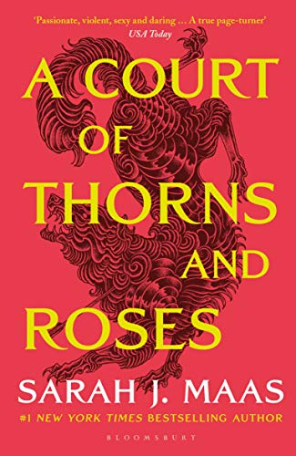
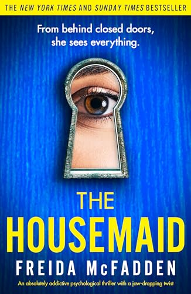

Home |
Book Recommendations |
Book Reviews
A Court of Thrones and Roses
Author: Sarah J. Maas

Synopsis: In "A Court of Thorns and Roses," Feyre Archeron, a skilled huntress, unknowingly kills a faerie and is taken captive to the magical realm of Prythian. There, she discovers a land plagued by ancient grudges and dark secrets. Feyre forms a tentative alliance with Tamlin, a powerful faerie lord, as they navigate the dangerous politics of the faerie courts. Filled with romance, intrigue, and peril, the series follows Feyre's journey as she confronts powerful enemies and uncovers the truth about her own destiny.
If you enjoy the following:
-
Romance
- Enemies to Lovers
- Forbidden Love
- Slow Burn Romance
- Love Triangles
-
Fantasy
- Magic
- Fae Folklore
- Epic Quests and Adventures
then you'll love "A Court of Thornes and Roses"!
The Housemaid
Author: Freida McFadden

Synopsis: The Housemaid intricately explores the intricate web of relationships and power struggles within an affluent household. Upon accepting a position as a housemaid, Anne, a young woman, stumbles upon hidden truths and finds herself entangled in the perilous realm of the upper echelons. Laden with suspense and mystery, the novel delves into themes of social hierarchy, allegiance, and the sacrifices individuals are willing to make to safeguard their personal agendas.
If you enjoy the following:
-
Mystery
-
Psychological Thriller
- Unreliable Narrators
- Twists and Turns
- Everyone Has a Secret
then you'll love "The Housemaid"!
Have I Told You This Already?
Author: Lauren Graham

Synopsis: In her latest collection of candid essays, actress Lauren Graham shares humorous anecdotes and heartfelt reflections from her years in Hollywood. With her trademark wit, she recounts memorable moments, from her early job at Barneys New York to navigating the quirks of her forgetful family. Filled with sage advice and laugh-out-loud observations, Graham's essays captivate with their warmth and charm, offering readers a delightful glimpse into her life and experiences.
If you enjoy the following:
-
Autobiographies
- Personal Stories
- Humor
- Family and Relationships
- Personal Growth
- Gilmore Girls
then you'll love "Have I Told You This Already?"!